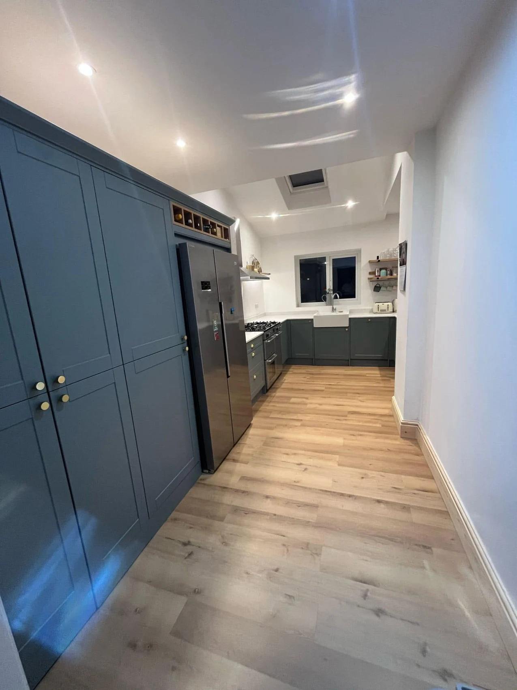
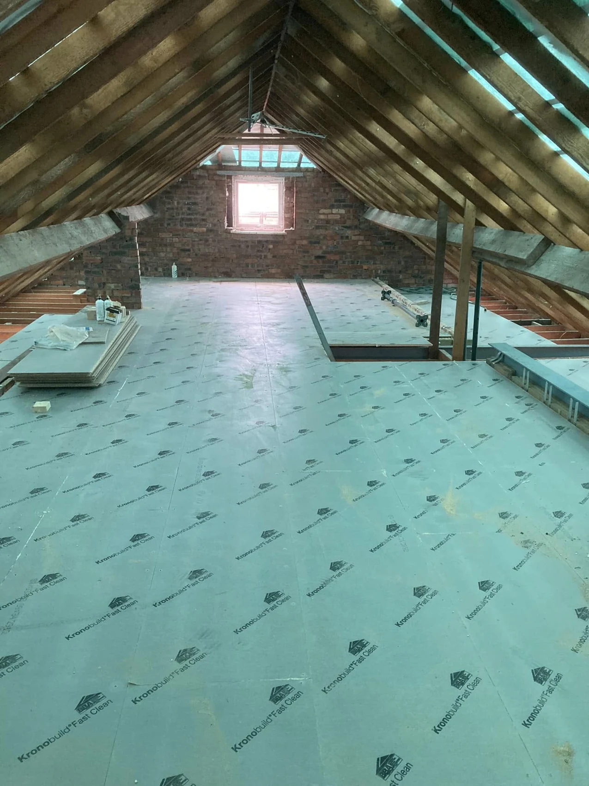
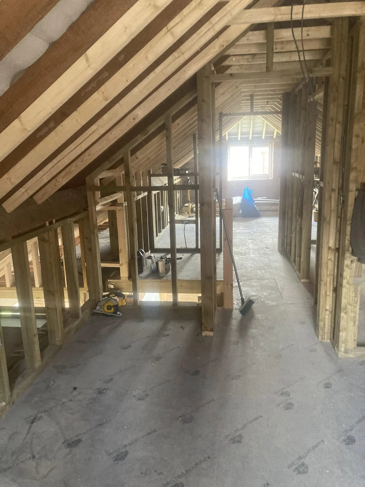

LG JOINERY · WIRRAL & LIVERPOOL
See the detail.
Picture the possibilities.
Kitchens, bathrooms, conversions, extensions and bespoke joinery.
BEHIND THE FINISH
Good spaces start
with good structure.
Two views from loft work in progress: flooring and roof structure, followed by timber partition framing.


OUR PROJECTS
The project collection.
All supplied projects, including finished spaces and work in progress. Select an image to enlarge.
YOUR NEXT PROJECT
Let’s talk about your home.
Tell us what you have in mind. This form opens a WhatsApp draft with all your details, ready for you to review, add photos and send.